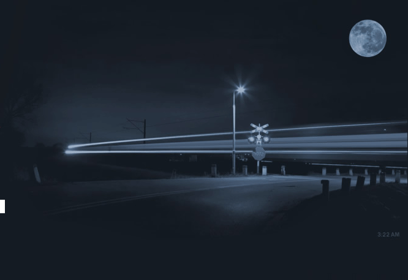

Холл с наслаждением затягивался сигаретой, развалившись на небольшой скамье недалеко от элеватора. Скамья эта была единственным местом на третьем этаже, где можно было спокойно перекурить и ненадолго отвлечься от работы, не опасаясь появления начальства.
Именно в этот момент и появился зловредный Уорвик. Холл совершенно
не ожидал увидеть шефа и был, естественно, совсем не рад этой неожиданной
встрече, рассчитывая, что Уорвик может появиться там никак не раньше трех.
Да и вообще, он редко показывался на рабочих местах во время ночной
смены. Особенно на третьем этаже. В это время он предпочитал, обычно,
отсиживаться
в своем офисе попивать кофе из своего любимого электрического кофейника,
который стоял у него прямо на рабочем столе. Кроме того, в последнее время
стояла ужасная жара и, в связи с этим, выше первого этажа Уорвик обычно не
поднимался.